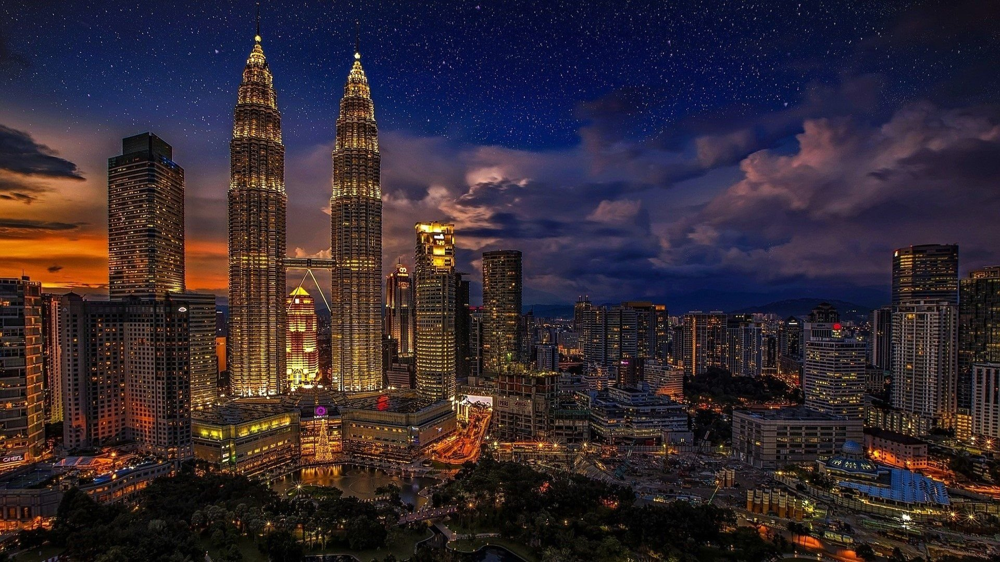

Malaysia ialah satu negara yang mempunyai banyak tempat-tempat menarik untuk dilawati.Antaranya ialah klcc.
1.Menara Berkembar Petronas (Kuala Lumpur)
Menara Berkembar PETRONAS di Kuala Lumpur, Malaysia ialah sepasang menara berkembar yang pernah menjadi bangunan tertinggi di dunia sebelum diatasi oleh Burj Khalifa dan Taipei 101. Sungguhpun begitu, kedua-dua menara ini masih merupakan menara berkembar tertinggi di dunia dan juga merupakan bangunan tertinggi pada abad ke-20. Kini, Menara Berkembar Petronas merupakan bangunan ke-11 tertinggi di dunia. Menara Berkembar Petronas memegang gelaran bangunan tertinggi dari tahun 1998 hingga 2004 dari segi ukuran dari aras pintu masuk utama hingga atas struktur, iaitu rujukan ketinggian asli yang digunakan oleh pertubuhan antarabangsa Majlis Bangunan Tinggi dan Habitat Bandar sejak tahun 1969 (tiga kategori ketinggian tambahan diperkenalkan ketika menara ini hampir disiapkan pada tahun 1996).[3] Menara berkembar ini merupakan mercu tanda dan ikon Kuala Lumpur, bersama-sama Menara Kuala Lumpur yang terletak berdekatan. Menara Berkembar Petronas telah majlis pembukaan secara rasminya oleh Perdana Menteri Malaysia ke-4, Mahathir bin Mohamad sempena ulang tahun Petronas ke-25 dengan tajuk pesta perak dan Hari Kemerdekaan Malaysia ke-42 pada 31 Ogos 1999.
2.A Famosa (Melaka)

Kota A Famosa (bermaksud "Yang Termasyhur" dalam bahasa Portugis) telah dibina oleh Portugis sebaik sahaja berjaya menawan Melaka pada tahun 1511. A Famosa terletak di Bandar Hilir, Melaka bersebelahan replika Istana Kesultanan Melaka dan Gereja St. Paul. Ia merupakan seni bina Eropah tertua yang masih tinggal di Asia. A Famosa merupakan nama menara yang dibina oleh orang Portugis selepas menakluk Melaka pada 1511.[1] A Famosa sebahagian daripada Kota Melaka (Fortaleza de Malaca) yang mengambil masa selama 5 bulan untuk dibina. Akibat suhu panas terik dan kekurangan makanan, ramai buruh paksa yang mati ketika membina kota tersebut. Bahan bagi membina kota tersebut diambil dari runtuhan masjid dan bangunan lain.
3.I city (Shah Alam)

i-City atau i-City Selangor (dahulunya dikenali sebagai Bandar Sumur) ialah sebuah perbandaran baru yang terletak di dalam kawasan Lembah Klang, Selangor, Malaysia. Lebih tepat lagi pekan baru ini terletak di Seksyen 7 Shah Alam berdekatan Sungai Rasau yang terletak di antara Bandar Baru Klang, Klang dan Shah Alam. Jaringan jalan raya dari/ke I-City dihubungkan ke Lebuhraya Persekutuan. Pekan baru ini dahulunya merupakan tapak bagi pusat pameran "Pengembaraan Angkasa Lepas Bandar Sumur" (bahasa Inggeris: Sumur City Aerospace Adventure) yang berlangsung pada tahun 1995. Kini, pekan ini dipenuhi pokok-pokok tiruan yang dipasang lampu berwarna-warni.
4.Legoland (Johor)
Legoland Malaysia merupakan sebuah taman tema yang dibuka di Nusajaya, Johor, Malaysia pada 15 September 2012. Taman tema ini juga menyediakan lebih 40 tunggangan interaktif, persembahan dan tarikan. Ia juga merupakan taman tema Legoland yang pertama pernah dibuka di Asia semenjak penubuhannya. Pembukaan rasmi taman tema ini dilancarkan oleh Sultan Ibrahim Ismail pada 22 September 2012.[2] Ia akan menjadi teras kepada kompleks yang bersepadu yang berukuran 5,500,000 kaki persegi (510,000 m2). Kawasan ini juga merupakan taman industri Nusa Cemerlang yang terletak dalam Iskandar Malaysia iaitu sebuah kawasan ekonomi yang terdiri daripada pusat gaya hidup seperti peruncitan, pejabat, hotel, perkhidmatan pangsapuri dan unit kediaman. Selain daripada taman tema ini, tarikan yang bertemakan Lego dibina berdekatan dengan kawasan ini. Seterusnya, taman tema air Lego adalah projek yang dibuka pada pertengahan tahun 2013[3] dan juga Legoland Hotel. Hotel ini juga merupakan yang pertama di Asia apabila pembukaannya bermula pada separuh pertama tahun 2014. Hotel tersebut dibina di bawah perjanjian pengurusan di antara syarikat. LL Themed Hotel Sdn. Bhd. merupakan syarikat usahasama yang dimiliki oleh Destination Resorts and Hotels Sdn. Bhd. dan Iskandar Harta Holdings Sdn. Bhd.[4] Kos pembinaan taman tema Legoland Malaysia adalah bernilai RM 720 juta manakala Legoland Hotel berjumlah RM 190 juta.[3] Hanya makanan yang diiktiraf halal sahaja dijual di restoran sekitar taman tema ini. Makanan ini juga termasuklah hidangan yang dijual oleh peniaga tempatan dan asing.[3] Selain itu, Legoland Malaysia juga menyasarkan 1.5 juta pengunjung menjelang pembukaannya[5] dan menjana lebih daripada RM 100 juta pada tahun pertama operasinya.
5.Masjid Putra (Putrajaya)
Masjid Putra ialah sebuah masjid yang terletak di Putrajaya, Malaysia.[1]. Masjid ini merupakan simbolik dan mercu tanda di Putrajaya. Pembinaan masjid ini bermula pada 1997 dan disiapkan dua tahun kemudian pada 1999. Masjid ini terletak bersebelahan dengan Perdana Putra, Pejabat Perdana Menteri Malaysia dan bersebelahan dengan Tasik Putrajaya. Jumlah staf Masjid Putra adalah seramai 35 orang dan diketuai oleh Imam Besar.
6.Muzium Negeri Sembilan (Negeri Sembilan)
Muzium Negeri Sembilan telah ditubuhkan pada tahun 1953 iaitu apabila Yam Tuan ke 8, Tuanku Abdul Rahman memberikan kebenaran supaya Istana Ampang Tinggi Kuala Pilah dipindahkan ke Taman Bunga di Jalan Dato' Hamzah, Seremban dan dijadikan sebagai Muzium Negeri. Muzium ini turut menempatkan bangunan Istana Ampang Tinggi sebagai tempat mempamerkan pelbagai khazanah budaya Melayu Negeri Sembilan dan merupakan sebahagian daripada Muzium Negeri Sembilan. Istana tersebut terdiri daripada beberapa panel berukir halus dan sepasang pintu gelangsar berat yang tidak boleh ditemui disebarang tempat di Semenanjung Malaysia pada masa sekarang. Istana ini telah dibina di atas permatang yang menghala ke sebuah sawah padi yang luas oleh Yang Dpertuan Besar Negeri Sembilan yang ke 5 iaitu Yamtuan Ulin (dikenali sebagai Yamtuan Imam) yang memerintah dari tahun 1861-1869. Bangunan ini berukiran 66 ½ kaki panjang dan 23 ½ kaki lebar.
7.Menara Condong Teluk Intan (Perak)

Menara Condong Teluk Intan ialah sebuah menara tangki air yang kemudian dijadikan menara jam yang terletak di Teluk Intan, Perak. Ia menjadi mercu tanda bandar Teluk Intan sejak beberapa lama. Keunikan menara ini ialah ia menyerupai Menara Pisa, Itali. Menara ini dibina pada tahun 1885. Ia memiliki ketinggian setinggi 85 kaki dan terdapat 110 buah anak tangga. Walaupun telah berusia lebih 100 tahun, ia masih berdiri kukuh. Menara ini sebenarnya merupakan takungan air sebelum adanya tangki air di Changkat Jong. Bangunan tiga tingkat ini dilengkapi dengan jam besar. Kini, menara ini tidak digunakan lagi dan hanya menjadi tarikan pelancong yang mengunjungi bandar Teluk Intan. Di bahagian bawahnya dihiasi dengan landskap yang indah seperti pasu bunga, lantai marmar dan kerusi rehat untuk bersantai seisi keluarga. Kini, bangunan purba itu mendapat julukan Menara Condong kedua di dunia selepas Menara Pisa di Itali.
8.Dataran Lang (Kedah)

Dataran Lang (Dataran Helang) merupakan mercu tanda Langkawi dan juga merupakan tugu tumpuan pelancong yang terkemuka di pulau Langkawi, Kedah, Malaysia. Ia merupakan patung helang setinggi 12 meter yang menggambarkan helang yang dari mana Langkawi mendapat namanya. Kedudukan patung helang gergasi ini terletak bersebelahan dengan pelantar jeti Kuah, dengan sayap berkepak sedia untuk menyusur keudara menjadikannya satu pemandangan yang mengkagumkan bagi para pelancong sedia untuk mendarat di pulau ini. Rakyat tempatan mencatatkan helang sebagai satu simbol di mana nama langkawi berasal “Lang” adalah sama atau dikata singkatan “helang” manakala “kawi” bermaksud perang merah di zaman Melayu purba. Pada malam, seluruh dataran diterangkan dengan lampu. Dari laut, panorama adalah menakjubkan. Suasana malam sungguh mengasyikkan dengan cahaya lampu daripada kapal yang berlabuh.
9.Gua Kelam (Perlis)
Gua Kelam, Perlis ialah sebuah gua batu kapur di Perlis, Malaysia. Gua ini terletak di pinggir pekan Kaki Bukit, 33 km di utara Kangar. Terdapat sebuah terowong semula jadi sepanjang 370 meter di dalamnya. Jambatan gantung di dalamnya menjadi tarikan pelancong. Air yang yang mengalir di dalamnya mengalir ke Sungai Perlis. Menteri Pelancongan Datuk Seri Dr Ng Yen Yen menyatakan Kementerian Pelancongan merancang untuk menjadikan gua ini sebagai destinasi pelancongan utama. Projek "Secret Garden of Perlis" ini akan melantik perunding rekabentuk taman bunga iaitu dua dari Perancis dan seorang dari London.[1] Gua Kelam dahulunya terkenal dengan lombong bijih yang menghasilkan bijih yang bermutu tinggi.Gua ini juga menjadi jalan penghubung antara penduduk Wang Kelian dan Kaki Bukit.Gua Kelam di namakan sempena dengan keadaannya di mana kedudukannya di kaki bukit dan suasana kelam yang sentiasa menyelubungi gua ini. Sungai bawah tanah yang panjangnya lebih kurang 400 meter mengalir melalui banjaran batu kapur dapat dilihat semasa melalui gua ini. Sungai bawah tanah ini adalah fenomena kejadian semulajadi. Bekalan elektrik disediakan untuk pelawat menikmati keindahan dalam gua. Pada tahun 1935, seorang warga Inggeris menyedari bahawa laluan sungai di sini adalah cara yang baik untuk mengangkut bijih timah dari sebuah lombong berhampiran sungai ini menerusi gua bawah tanah ke Kaki Bukit. Kini pelawat tempatan dan asing boleh berjalan menerusi gua ini menggunakan sebuah laluan kayu yang diterangi cahaya lampu.
10.Pantai Teluk Cempedak (Pahang)
Teluk Cempedak merupakan antara pantai yang popular di negeri Pahang. Terletak hanya 5 km daripada bandar Kuantan dan berhampiran dengan Kelab Golf Diraja Pahang. Pantai ini lebih dikenali oleh masyarakat setempat dengan nama TC yang bermaksud Teluk Cempedak. TC merupakan tempat tumpuan.Teluk Cempedak ini mendapat namanya daripada pokok cempedak. Suatu masa dahulu ada orang telah menanam banyak pokok cempedak di tepi pantai chempedak. Itulan asal nama pantai cempedak. Nama Teluk Cempedak atau jolokannya TC dalam kalangan penduduk tempatan cukup dikenali kerana menawarkan pelbagai aktiviti yang boleh dilakukan sama ada sendirian atau bersama keluarga seperti berkelah, mandi laut, memancing, bermain layang-layang, bola pantai atau sekadar bersiar-siar di pantainya sambil menghirup bayu laut.
11.Pasar Siti Khadijah (Kelantan)
Nama asal Pasar Besar Siti Khadijah ialah Pasar Besar Buluh Kubu. Walau bagaimanapun ia telah ditukar namanya kepada nama ini oleh Menteri Besar Kelantan iaitu Y.A.B Tuan Guru Dato' Nik Abdul Aziz Bin Nik Mat sebagai tanda penghormatan kepada kaum Hawa, memandangkan majoriti peniaganya terdiri daripada golongan wanita. Satu pemandangan yang unik di pasar-pasar di Kelantan ialah peniaganya yang rata-rata terdiri daripada kaum wanita yang terkenal dengan minat berniaga . Pasar ini mempunyai 4 tingkat dan berbentuk segi lapan. Tingkat bawah dikhususkan untuk barangan basah seperti ikan, sayur-sayuran, ayam dan sebagainya. Tingkat 1 pula diperuntukkan kepada barangan makanan kering seperti serunding, iaitu sejenis makanan Kelantan yang sangat terkenal. Juga terdapat Ayam percik, ikan percik, nasi kerabu, nasi berlauk, nasi dagang, laksam dan somtam merupakan antara makanan yang paling "tersohor" bagi rakyat negeri Kelantan. Kuih tradisional Kelantan seperti kuih "tahi itik, akak, jala mas, buah tanjung, serabe, tepung pelita, dan pelbagai lagi kuih lain yang juga dijual di sini. Manakala tingkat 2 dan 3, untuk barangan bukan makanan.
12.Jambatan Angkat Terengganu (Terengganu)
Jambatan Angkat Kuala Terengganu merupakan sebuah jambatan imbang yang terletak di Kuala Terengganu, Terengganu, Malaysia.[7] Ia merupakan jambatan keempat di kawasan bandar Kuala Terengganu yang menyeberangi Sungai Terengganu selepas Jambatan Sultan Mahmud, Jambatan Manir dan Jambatan Pulau Sekati. Jambatan Angkat Kuala Terengganu merupakan sebuah projek dalam inisiatif Wilayah Ekonomi Pantai Timur (ECER). Jambatan imbang sulung di Malaysia ini dibina oleh Zelan Construction Sdn Bhd dengan menelan belanja RM248 juta. Kerja pembinaan bermula pada Ogos 2014 dan disiapkan pada pertengahan tahun 2019. Jambatan angkat ini juga merupakan sebahagian daripada projek pembangunan Kuala Terengganu City Centre (KTCC).[8][9] Jambatan Angkat Kuala Terengganu dibuka untuk tempoh percubaan dari 2 hingga 17 Jun sewaktu musim perayaan Aidilfitri, kemudian ditutup semula untuk memberi ruang kepada kerja-kerja ujian dan penambahbaikan. Akhirnya ia dibuka kepada kenderaan dan pejalan kaki pada 1 Ogos 2019.
13.Gunung Kinabalu (Sabah)
Gunung Kinabalu (bahasa Dusun: Gayo Ngaran atau Nulu Nabalu) ialah sebuah gunung pluton terletak di Daerah Kundasang, Ranau, Bahagian Pantai Barat negeri Sabah, Malaysia. Puncak ia tertinggi tidak sahaja dalam negara Malaysia malah juga di Pulau Borneo dengan ketinggian mencecah 4,095 meter dari aras laut;[1] gunung Kinabalu merupakan yang ke-29 tertinggi di Asia Tenggara. Gunung Kinabalu merupakan lambang kemegahan kepada setiap penduduk yang tinggal di Sabah. Sesetengah penduduk menganggap Gunung Kinabalu ini merupakan gunung yang dapat memberikan semangat juang dan satu padu rakyat Sabah. Gunung Kinabalu banyak menyimpan cerita dan kisah-kisah yang dianggap ajaib oleh masyararakat Dusun setempat, mereka percaya bahawa Gunung Kinabalu merupakan tempat bersemadinya semangat mereka selepas meninggal dunia.
14.Kampung Budaya Sarawak (Sarawak)

Kampung Budaya Sarawak Rencana Perbincangan Baca Sunting Sunting sumber Lihat sejarah Daripada Wikipedia, ensiklopedia bebas. Kampung Budaya Sarawak merupakan mikrokosma budaya seluruh negeri Sarawak. Digelar sebagai 'muzium hidup', kampung ini mempamerkan gaya hidup dan kediaman tradisional daripada kumpulan etnik utama di Sarawak. Antara barangan yang dipamerkan adalah peralatan memasak, peralatan tradisional, alat muzik dan banyak lagi. Kemuncak lawatan di sini ialah persembahan kebudayaan diadakan pada pukul 11.30 pagi dan 16:00 setiap hari. Kampung Budaya Sarawak ini terletak di kaki Gunung Santubong, kira-kira 35km dari Kuching.